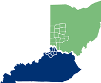
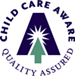

for high-quality early education and care
in Southwest Ohio, the Miami Valley and Northern Kentucky.
| About 4C for Children |
| What's New |
| Parents & Families |
| Child Care Providers |
| Community & Media |
| Support 4C |
| Contact 4C |

|
| Board Login |
About 4C
Who We Are
4C for Children is the region’s pioneering leader, advocate and resource for high-quality early childhood education and care—and the winner of the 2010 Cincinnati Better Business Bureau Torch Award for Marketplace Ethics.
It was founded in 1972 by a coalition of five agencies and funders committed to ensuring the quality, effectiveness and availability of early childhood learning and care in the Greater Cincinnati area. It's original name, Comprehensive Community Child Care, was quickly shortened to "4C." Today, this child care resource and referral agency does business as "4C for Children."
- Our mission and values
- For a CET video about 4C and its services.
- To see how 4C is making a difference
- For a message about why 4C needs your support
- Our stewardship report
 4C serves a 23-county area:
- five counties in Southwest Ohio (Butler, Clermont, Clinton, Hamilton and Warren)
- ten counties in the Miami Valley (Champaign, Clark, Darke, Fayette, Greene, Logan, Miami, Montgomery, Preble, and Shelby)
- eight counties in Northern Kentucky (Boone, Campbell, Carroll, Gallatin, Grant, Kenton, Owen and Pendleton).
What We Do
As the designated child care resource and referral agency for this region, 4C is the hub of information on early care and education programs and the largest provider of training and technical assistance for early childhood care-givers and teachers. 4C assists families, child-care centers, family child care providers and employers.
For parents, we:
- offer information on selecting quality child care and the new “star-rating systems” now operating in both Ohio and Kentucky.
- operate the only area child care resource and referral service to assist in finding child care. (4C is a Child Care Aware® Quality Assured Consumer Education Referral Service).
- maintain a database of more than 2,600 child-care options in the service delivery area including licensed child-care centers, preschools, school-age child-care programs, and 4C-registered family child-care homes.
For more information about all of the above, visit our Parents & Family page.
For the community, we
- advocate on behalf of children and families on relevant public policy issues
- participate in community initiates that support children and families
- gather and provide information on the needs of families and children
- maintain a database on the demand and supply of child care and early education
For more information about all of the above, visit our Community & Media page.
For child care providers, we:
- provide regular training and technical assistance.
- encourage professional development through our college-accredited Institute for Early Childhood Excellence
- offer assistance to individuals who want to start a center-based program.
- sponsor the USDA reimbursement program for serving nutritious meals to children in care.
- recruit individuals interested in becoming family child-care providers.
For more information about all of the above, visit our Child Care Providers page
For employers, we:
- provide enhanced resource and referral services to the employees of participating companies.
- facilitate on-site parenting workshops for employees of participating companies.
- consult with employers on work and family issues such as sick child care and parental leave.
For more information about the above, call 800-256-1296.
Our Mission
To improve the quality, effectiveness and accessibility of early childhood education and care in the region so every child has a positive experience and a foundation for success in school and life.
Our Governance
4C, a 501(c)3 incorporated in the State of Ohio, is governed by a 22-member Board of Trustees. For a listing of lead staff.
- For our IRS tax exempt letter
Our Funding
Funding for 4C is provided by various levels of government, United Ways, foundations and corporations as well as private individuals. For a complete list of supporters, see our most recent annual report.
 Better Business Bureau Accredited Charity
Better Business Bureau Accredited Charity
Our Policies
4C strives to provide high quality service to all its customers and clients. We encourage anyone with a concern about our service to contact: Chief Operating Officer, 4C for Children, 1924 Dana Ave., Cincinnati, OH 45207 at 800-256-1296 or agency@4cforchildren.org.
Home | Child Care eSearch | Online Registration | Job Postings | Donate | Contact Us